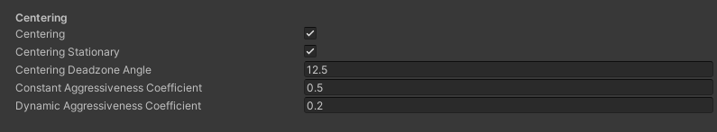

This chapter is mostly about making small adjustments based on personal impression of the locomotion system after initial testing, as well as incrementally fine-tuning the values to improve the movement itself.
General Changes
I did end up enabling ‘strafing’ by tilting your head on the forward (z) axis. This turned out to be somewhat confusing, but manageable, when standing still, but made precise course adjustments when moving at a faster pace much easier. Strafing, however, always uses a constant speed with the same constant as the first level, in order to not introduce even more movement variables that the user has to consciously, or later when they got a hang of the movement mechanic, subconsciously manage using the angles of their head.
Tuning the ‘Levels’
When it comes to tuning the values of the levels, there’s three main factors to consider:
- How many levels should there be?
- Which thresholds should the levels have?
- Which coefficients should each level contain?
Now, I would like to say that I used some kind of amazing scientific method to determine these factors, whilst accounting for all kinds of discrepancies, e.g. between different persons’ range of neck-motion etc, but no. I just sat down and trial-and-errored everything, adjusting the values to feel right for me, not everyone.
|
|
|---|
| Trial and Error: This image shows the official, very scientific and widely accepted practice of ‘Trial and Error’, a technique passed down from developer to developer since ancient times (1970) 1. |
The main factors I wanted to adjust for are, in order of subjective importance to me, as follows:
- Accuracy: Users should be able to (mostly) effortlessly navigate around obstacles and orient themselves in a desired angle around an object when moving slowly. This will obviously be important for the interaction task. Users should also be able to make precise adjustments to their positioning when moving faster, for instance to collect the coins on their way whilst traversing the parkour level.
- Speed: Users should be able to traverse a relatively simple environment, such as the parkour level, fast and effortlessly.
- Comfort: Users should not have to move their neck into unpleasant and uncomfortable angles for long periods of time. This also includes tuning the size of the initial deadzone.
Note: All of these descriptions and values apply to my personal, subjective experience while testing the system.
1. Amount of Levels
The total amount of levels is mostly limited by the range of motion we have when it comes to the pitch of the neck. With too many levels, we lose the benefit of having distinct levels with specific, precise coefficients in the first place, so the total amount of levels should ideally be kept low.
So, there need to be at least two levels: one with only a small constant, precise coefficient and no dynamic ramp-up to enable little movements, and a level with a higher constant, and more aggressive dynamic coefficient to enable quick traversal through the parkour. Using only such two levels works, but lacks a ‘middle-ground’ when moving at a moderate pace, whilst still needing to make sizable adjustments to the current position, such as in the ‘curvy’ (‘bendy’? ‘wiggly’?) part of the parkour. Thus, I added a third level situated between the precise and fast level. In the following, these levels will be named as P (precise), M (median) and F (fast).
2. Thresholds
Sit up in your chair and see how far you can rotate your head in the following ways: Pitch your head forward. You will likely end up with your chin on your chest. But now try to actually look ahead to what’s in front of you. You will likely be able to move your eyes in a way to still look ahead with your chin on your chest, but will quickly encounter noticeable eye-strain from the unnatural angle. Now, move your head backwards. Depending on your chair, you may be able to move your head back quite a bit, but much less than you can tilt your head forward.
So what did this tiny self-“experiment” show? First, pitch forward is limited by the angle of the eyes at which noticeable eye-strain occurs when staying in the position for any amount of time. The backward pitch has overall less freedom than the forward pitch, and may be limited by a chair. Thus, the overall range of motion we have to work with for movement is smaller than the overall range of motion of a person’s head.
Note: For now2, we don’t account for actual disabilities which may decrease the range of motion of a users’ neck even more.
As I have decided on using a total of three levels, we still need to think about two types of thresholds:
-
The initial deadzone size threshold: The deadzone needs to be big enough to comfortably stay in, whilst not moving accidentally, even when a users’ neck is already slightly tired after some time in VR, due to the fact that - well - they have a big heavy chunk of machinery glued to their face. However, it needs to be small enough to not force higher levels to have increasingly large thresholds, resulting in the aforementioned eye-strain or hitting your head against your chair when pitching backwards. I found that a forward-pitch-angle of 4°, and a backward-pitch-angle of 2° is a good compromise between these conflicting statements. It would be interesting to test this in an actual study, though.
-
The thresholds between levels: The P-Threshold is arguably the most important, as accidentally slipping into a faster level may ruin a user’s precise positioning they’ve worked hard to achieve. Thus, the threshold from P to M should be larger than the threshold from M to F.
3. Coefficients
Now. I could write up some amazing conclusions I came to when actually deciding the final speed coefficients, but no. I just used random values from the start that felt good, and pretty much never changed them and it worked mostly fine. The important aspect here is that in the P level, there is no dynamic coefficient to give a user more control about their speed without messing it up by factoring in the dynamic angle of the headset. Overall this is how the values for the levels look in the end:
|
|
|---|
| Values: The deadzone size and three levels. Note that ‘x’ denotes forward pitch angle, ‘y’ denotes roll (which is somewhat boring and mostly ended up unused), and ‘z’ denotes backward pitch. |
Tuning ‘Return to Center’
When it comes to the ‘Return to Center’-Mechanic, really the main three factors are:
- The size of the deadzone: I noticed an interesting effect here: Even relatively small deadzone cone angles of, say, 25° (resulting in an overall deadzone angle of 50°) quickly result in disorientation and strain on the neck. 25° does not seem much, but feels much larger than you’d ever want to rotate your head while moving. In the end, after some trial and error, I chose a quite small deadzone angle of 12.5°.
- The speed of rotation when moving based on the movement speed: When moving, the rotation speed correlates directly to the deadzone angle when it comes to the size of the turning circle of the player. Thus, faster movement speeds and lower deadzone angles give the user more control about their rotation in a shorter amount of time, increasing accuracy. When rotating the player using the setup from chapter 03 ‘Locomotion II’, a constant rotational coefficient of 0.5f, and a dynamic coefficient of 0.2f seemed to be a good middle ground between motion sickness, and not getting frustrated by not being able to rotate fast enough.
- The speed of rotation when stationary: When stationary, there’s obviously no point in adjusting the rotational speed based on movement speed. So I basically just chose values until I arrived at a compromise between ‘fast enough to not be frustrating because turning takes ages’ and ’too fast to make my stomach act up’.
|

|
|---|
| Return to Center: The values for the “return-to-center”-mechanic. |
So, to summarize, smaller deadzone angles, but therefore slower rotation, not only result in less motion sickness, but also less tiring head-movements required to perform a basic task such as turning, which is a big plus. In general, the lower the turn-rate, the less motion sickness, and the lower the deadzone angle, the less strain on a users’ neck. When moving faster, we can increase the rotation-speed dynamically based on speed without inducing significantly (warning - significantly used without any scientific or statistical process behind it) more motion sickness.
Note: All of these descriptions apply to my personal, subjective experience while testing the system.
A ramble on ‘Scriptable Objects’
Oh. My. God. I am incredibly happy with my decision to create all value-objects as scriptable objects, as this allowed me to create multiple value objects with different levels and coefficients, and swap between them mostly ;) hassle-free at runtime. I’m not entirely sure how much time I saved in total by not having to redeploy the entire application to the Quest everytime I had to change something, instead just creating three or four different scriptables with each iteration. Oh, while i’m at it might as well…
A sub-ramble on the Quest 2, QuestLink and AirLink
What the hell Meta. I have rarely attempted to use a software as crappy as QuestLink. Why in the seven hells do I either need a specialized 25$-Cable, or basically shove my router up my *** and even then not being guaranteed that AirLink actually works without constant hiccups due to, oh I don’t know… fairies in my internet connection or something??? In short, if QuestLink or AirLink were actually usable, I could’ve probably spent less than half the time on tuning all these values than what time I had to spend in the end…
What’s next?
Next up, we will begin implementing the interaction techniques, entering a downward spiral of failure and awful implementations.